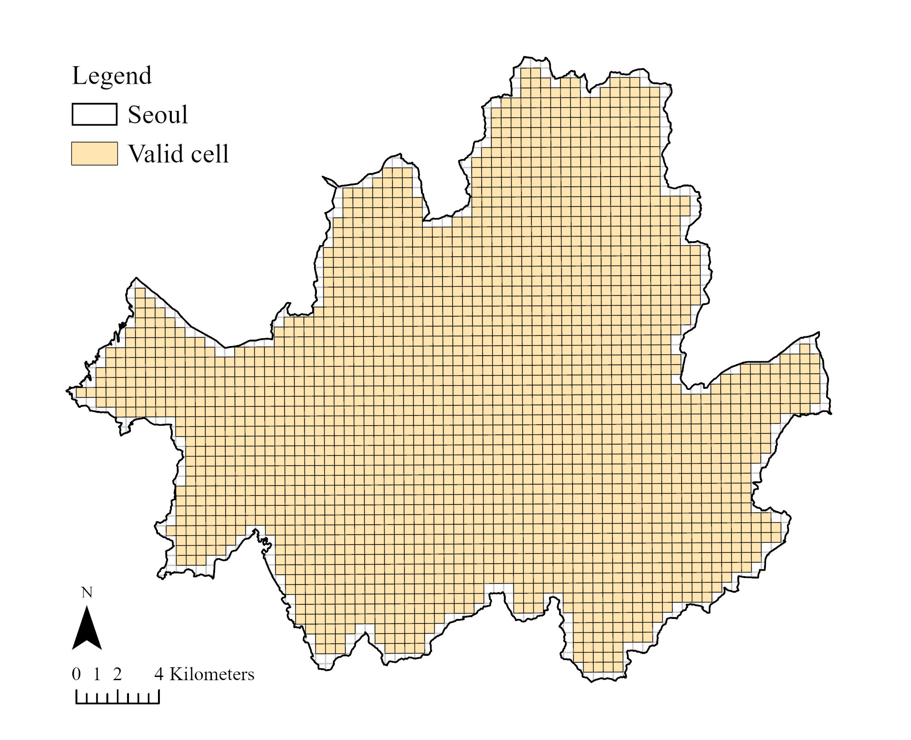
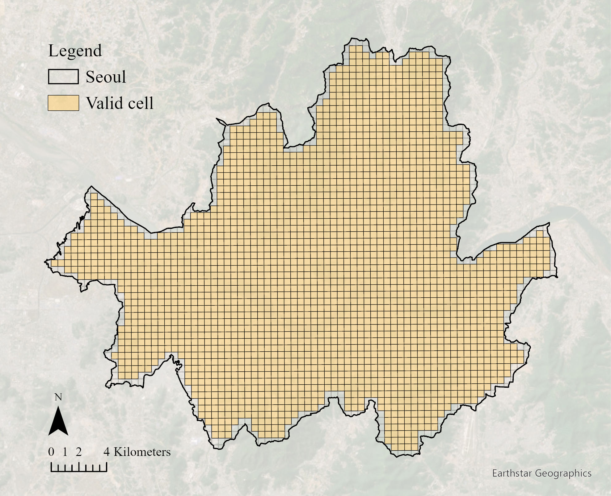
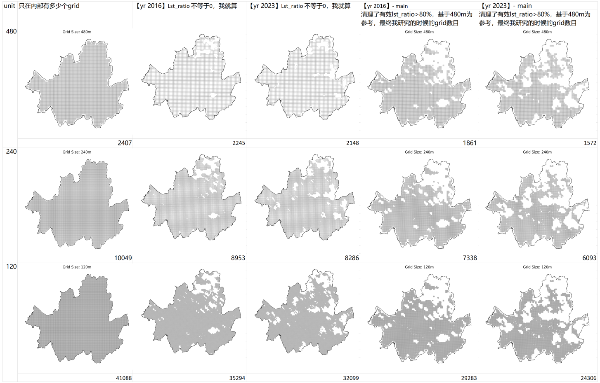

用来记录所有相关的文件信息
1. 点击这里访问 Google Drive 文件：
Google Drive 链接|  |  |
这里展示了我的数据选择过程，随着有效值需求的拔高，以及120和240m grid需要和480m完全对齐，我们最终得到的有效值一览表
| 2016 (N = 1861) | 2023 (N= 1572) |
|---|---|
|
|
首先选取气象站。最终我们只选了龙山气象站 ID = 108

可以看到2023年的6.16不是典型 normal heat day，在图像中前2天下了暴雨。
然而，由于所有有效数据都不太好↓


| 2016 (G = 120,240,480) | 2023 (G = 120,240,480) |
|---|---|
| Year | Normal heat day | Extreme heat day | Heat Resilience |
|---|---|---|---|
| 2016 |

27.7 AT 47.51 percentile 99.46% non cloud ratio LOCAL_TIME = 11:11:17 |

34.3 AT 97.47 percentile 82.53% non cloud ratio LOCAL_TIME = 11:11:04 |

82.10% valid area ratio |
| 2023 |
28.4 AT 53.95 percentile 99.00% non cloud ratio LOCAL_TIME = 11:10:22 |

33.7 AT 95.68 percentile 72.66% non cloud ratio LOCAL_TIME = 11:10:50 |

72.25% valid area ratio |
| Year | Normal heat day | Extreme heat day | Heat Resilience |
|---|---|---|---|
| 2016 |
|
|
|
| 2023 |
|
|
|
| BCR | BHV | SVF | |
|---|---|---|---|
| Variable |  2023 2023 |
 2016 2016 |
 2016 2016 |
| NDVI | EV | WR | |
| Variable |  2023 2023 |
 2023 2023 |
|
| Dist_P | Dist_M | Dist_W | |
| Variable |  2016 2016 2023 2023 |
 2023 2023 |
| Year | pearson correlation | spearman correlation | VIF score |
|---|---|---|---|
| 2016 | 
|

|

|
| 2023 | 
|

|

|
| 2016 | 2023 |
|---|---|
 1308, 1377, 1411, 1471, 1525, 1690 |
 1392, 1571 |
| Year | Normal heat day | Extreme heat day | HR |
|---|---|---|---|
| 2016 | R²: 0.8539
RMSE: 0.9577 |
R²: 0.9055
RMSE: 1.2423 |
R²: 0.8102
RMSE: 0.7770 |
| 2023 | R²: 0.9206
RMSE: 1.1580 |
R²: 0.8622
RMSE: 1.6241 |
R²: 0.1298
RMSE: 1.3000 |
| Year | normal heat day | extreme heat day | heat resilience |
|---|---|---|---|
| 2016 | |||
| 2023 |
| Year | Normal heat day | Extreme heat day | HR |
|---|---|---|---|
| 2016 | Moran's I: 0.6881
p-value: 0.0010 Expected I: -0.0006 Variance: 0.0002 |
Moran's I: 0.6760
p-value: 0.0010 Expected I: -0.0006 Variance: 0.0002 |
Moran's I: 0.6699
p-value: 0.0010 Expected I: -0.0006 Variance: 0.0002 |
| 2023 | Moran's I: 0.6775
p-value: 0.0010 Expected I: -0.0007 Variance: 0.0002 |
Moran's I: 0.7007
p-value: 0.0010 Expected I: -0.0007 Variance: 0.0002 |
Moran's I: 0.8606
p-value: 0.0010 Expected I: -0.0007 Variance: 0.0002 |
| Year | Normal heat day | Extreme heat day | HR |
|---|---|---|---|
| 2016 | LM-Lag (lml) : 211.3825, p-value = 6.859e-48
LM-Error (lme) : 1652.8657, p-value = 0 Robust LM-Lag (rlml) : 16.2983, p-value = 5.411e-05 Robust LM-Error (rlme) : 1457.7815, p-value = 0 |
LM-Lag (lml) : 248.7858, p-value = 4.777e-56
LM-Error (lme) : 1839.4007, p-value = 0 Robust LM-Lag (rlml) : 30.7201, p-value = 2.981e-08 Robust LM-Error (rlme) : 1621.3350, p-value = 0 |
LM-Lag (lml) : 706.0370, p-value = 1.455e-155
LM-Error (lme) : 2894.3563, p-value = 0 Robust LM-Lag (rlml) : 6.0687, p-value = 0.01376 Robust LM-Error (rlme) : 2194.3880, p-value = 0 |
| 2023 | LM-Lag (lml) : 261.6000, p-value = 7.687e-59
LM-Error (lme) : 1403.3011, p-value = 4.028e-307 Robust LM-Lag (rlml) : 22.6666, p-value = 1.927e-06 Robust LM-Error (rlme) : 1164.3677, p-value = 3.383e-255 |
LM-Lag (lml) : 641.0536, p-value = 1.971e-141
LM-Error (lme) : 2286.3265, p-value = 0 Robust LM-Lag (rlml) : 52.8418, p-value = 3.615e-13 Robust LM-Error (rlme) : 1698.1147, p-value = 0 |
LM-Lag (lml) : 3168.4077, p-value = 0
LM-Error (lme) : 3154.6372, p-value = 0 Robust LM-Lag (rlml) : 80.0721, p-value = 3.61e-19 Robust LM-Error (rlme) : 66.3016, p-value = 3.869e-16 |
| # 1. OLS
models['OLS'] = OLS(yi, x, w=w, spat_diag=True, moran=True,
name_w=w_name, name_ds=ds_name)
# 2. SLX models['SLX'] = OLS(yi, x, w=w, slx_lags=1, spat_diag=True, moran=True, name_w=w_name,name_ds=ds_name) # 3. SLM models['SLM'] = ML_Lag(yi, x, w=w, method="full", name_w=w_name, name_ds=ds_name, spat_impacts=['full']) # 4. SDM models['SDM'] = ML_Lag(yi, x, w=w, slx_lags=1, name_w=w_name, name_ds=ds_name, spat_impacts=['full'], spat_diag=True) # 5. SEM models['SEM'] = ML_Error(yi, x, w=w, method="full", name_w=w_name,name_ds=ds_name) # 6. SDEM models['SDEM'] = ML_Error(yi, x, w=w, slx_lags=1, method="full", name_w=w_name, name_ds=ds_name) |
|---|
| LR test score | model performance |
|---|---|
| explanatory_vars =
['BCR', 'BHV', 'SVF', 'NDVI', 'EV', 'WR', 'Dist_W', 'Dist_P', 'Dist_M'] |
explanatory_vars =
['BCR', 'BHV', 'SVF', 'NDVI', 'EV', 'WR'] |
|---|---|
| model | partial SDM |
|---|---|
| equation | $$LST = \beta_0 + \rho W\ln(LST) + \beta_1 BCR + \beta_2 BHV + \beta_3 NDVI + \beta_4 SVF + \beta_5 EV + \beta_6 WR + \beta_7 DistWB + \beta_8 DistGL + \beta_9 DistMT + \theta_1 WBCR + \theta_2 WBHV + \theta_3 WNDVI + \theta_4 WSVF + \theta_5 WEV + \theta_6 WWR + \varepsilon, \ \varepsilon \sim N(0, \sigma^2 I)$$ LST = ρWln(LST) + β0+ β1BCR + β2BHV + β3NDVI + β4SVF + β5EV + β6WR + β7DistWB + β8DistGL + β9DistMT +θ1​WBCR+θ2​WBHV+θ3​WNDVI+θ4​WSVF+θ5​WEV+θ6​WWR + ε, ε∼N(0, σ²I) |
| codes | |
| result_nor_2016 | nor_2016 = 23.2855 + 0.5826*Wnor_2016 + 0.0338*BCR + 0.0128*BHV + 10.9005*SVF + -20.0875*NDVI + -0.0123*EV + -0.1102*WR + -0.0086*Dist_W + -0.0056*Dist_P + -0.0228*Dist_M + -0.1100*W_BCR + -0.1021*W_BHV + -16.4776*W_SVF + 2.6954*W_NDVI + 0.0050*W_EV + 0.0332*W_WR + 0.5826*W_nor_2016 |
| result_ext_2016 | ext_2016 = 33.0126 + 0.5725*Wext_2016 + 0.0520*BCR + 0.0118*BHV + 12.5920*SVF + -37.3964*NDVI + -0.0154*EV + -0.1850*WR + -0.0849*Dist_W + -0.0030*Dist_P + -0.0828*Dist_M + -0.1396*W_BCR + -0.1200*W_BHV + -21.7296*W_SVF + 14.0294*W_NDVI + 0.0047*W_EV + 0.0758*W_WR + 0.5725*W_ext_2016 |
| result_hr_2016 | hr_2016 = -9.1532 + 0.8417*Whr_2016 + -0.0197*BCR + 0.0003*BHV + -1.9617*SVF + 17.0564*NDVI + 0.0032*EV + 0.0734*WR + 0.0407*Dist_W + -0.0050*Dist_P + 0.0409*Dist_M + 0.0547*W_BCR + 0.0456*W_BHV + 8.5564*W_SVF + -13.9486*W_NDVI + 0.0001*W_EV + -0.0581*W_WR + 0.8417*W_hr_2016 |
| result_nor_2023 | nor_2023 = 30.1599 + 0.5751*Wnor_2023 + 0.0448*BCR + 0.0154*BHV + 10.7982*SVF + -26.2233*NDVI + -0.0125*EV + -0.1693*WR + -0.1100*Dist_W + -0.0776*Dist_P + -0.0106*Dist_M + -0.1046*W_BCR + -0.1183*W_BHV + -20.6142*W_SVF + 12.8149*W_NDVI + -0.0005*W_EV + 0.0747*W_WR + 0.5751*W_nor_2023 |
| result_ext_2023 | ext_2023 = 29.3256 + 0.7471*Wext_2023 + 0.0476*BCR + 0.0144*BHV + 12.4025*SVF + -27.3378*NDVI + -0.0127*EV + -0.1678*WR + -0.0464*Dist_W + -0.0227*Dist_P + -0.0636*Dist_M + -0.1205*W_BCR + -0.1437*W_BHV + -28.2722*W_SVF + 18.7731*W_NDVI + 0.0013*W_EV + 0.1100*W_WR + 0.7471*W_ext_2023 |
| result_hr_2023 | hr_2023 = -1.1990 + 0.9467*Whr_2023 + 0.0010*BCR + 0.0047*BHV + -0.7294*SVF + 1.4199*NDVI + -0.0001*EV + 0.0003*WR + -0.0084*Dist_W + -0.0002*Dist_P + 0.0124*Dist_M + 0.0002*W_BCR + 0.0001*W_BHV + 1.7678*W_SVF + -1.4593*W_NDVI + 0.0003*W_EV + -0.0013*W_WR + 0.9467*W_hr_2023 |
| model | partial SDEM |
|---|---|
| equation | $$LST = \beta_0 + \beta_1 BCR + \beta_2 BHV + \beta_3 NDVI + \beta_4 SVF + \beta_5 EV + \beta_6 WR + \beta_7 DistWB + \beta_8 DistGL + \beta_9 DistMT + \theta_1 WBCR + \theta_2 WBHV + \theta_3 WNDVI + \theta_4 WSVF + \theta_5 WEV + \theta_6 WWR + u, \quad u = \lambda W u + \varepsilon, \ \varepsilon \sim N(0, \sigma^2 I) $$ LST = β0+ β1BCR + β2BHV + β3NDVI + β4SVF + β5EV + β6WR + β7DistWB + β8DistGL + β9DistMT +θ1​WBCR+θ2​WBHV+θ3​WNDVI+θ4​WSVF+θ5​WEV+θ6​WWR + u, u = λWu + ε, ε∼N(0, σ²I) |
| codes | |
| result_nor_2016 | nor_2016 = 27.5798 + 0.0203*BCR + 0.0014*BHV + 8.4274*SVF + -21.4460*NDVI + -0.0114*EV + -0.1134*WR + -0.0982*Dist_W + -0.0560*Dist_P + 0.0172*Dist_M + -0.0352*W_BCR + -0.0110*W_BHV + 3.3434*W_SVF + -10.5876*W_NDVI + 0.0039*W_EV + -0.0394*W_WR + 0.8184*lambda |
| result_ext_2016 | ext_2016 = 39.3798 + 0.0326*BCR + -0.0036*BHV + 8.9039*SVF + -38.8294*NDVI + -0.0148*EV + -0.1873*WR + -0.2271*Dist_W + -0.0456*Dist_P + -0.1242*Dist_M + -0.0248*W_BCR + 0.0113*W_BHV + 4.9234*W_SVF + -9.7617*W_NDVI + 0.0050*W_EV + -0.0444*W_WR + 0.8400*lambda |
| result_hr_2016 | hr_2016 = -11.9287 + -0.0118*BCR + 0.0056*BHV + -0.3798*SVF + 17.4904*NDVI + 0.0033*EV + 0.0735*WR + 0.0882*Dist_W + -0.0281*Dist_P + 0.1634*Dist_M + -0.0085*W_BCR + -0.0200*W_BHV + -1.7936*W_SVF + 0.7076*W_NDVI + -0.0013*W_EV + 0.0096*W_WR + 0.9190*lambda |
| result_nor_2023 | nor_2023 = 37.4249 + 0.0267*BCR + 0.0033*BHV + 7.7807*SVF + -27.5380*NDVI + -0.0122*EV + -0.1727*WR + -0.2168*Dist_W + -0.0881*Dist_P + 0.0103*Dist_M + -0.0011*W_BCR + 0.0098*W_BHV + 0.9387*W_SVF + -2.9640*W_NDVI + -0.0021*W_EV + -0.0292*W_WR + 0.8250*lambda |
| result_ext_2023 | ext_2023 = 40.0883 + 0.0256*BCR + 0.0006*BHV + 8.3616*SVF + -29.4204*NDVI + -0.0114*EV + -0.1725*WR + -0.2396*Dist_W + -0.2239*Dist_P + -0.1696*Dist_M + 0.0193*W_BCR + 0.0377*W_BHV + 2.9527*W_SVF + -4.2769*W_NDVI + 0.0026*W_EV + -0.0304*W_WR + 0.9065*lambda |
| result_hr_2023 | hr_2023 = -2.5438 + 0.0004*BCR + 0.0032*BHV + -0.6424*SVF + 1.6928*NDVI + -0.0007*EV + 0.0005*WR + 0.0621*Dist_W + 0.1557*Dist_P + 0.1643*Dist_M + -0.0177*W_BCR + -0.0218*W_BHV + -1.7902*W_SVF + 0.7802*W_NDVI + -0.0038*W_EV + -0.0004*W_WR + 0.9537*lambda |
| explanatory_vars =
['BCR', 'BHV', 'SVF', 'NDVI', 'EV', 'WR', 'Dist_W', 'Dist_P', 'Dist_M'] explanatory_vars_clean = ['BCR', 'BHV', 'SVF', 'NDVI', 'EV', 'WR'] X-> explanatory_vars; WX -> explanatory_vars_clean |
|---|
| SDM | SDEM |
|---|---|
| Year | SDM | SDEM |
|---|---|---|
| 2016 | ||
| 2023 |
y_trend = (X_base @ betas).ravel() # (n_points,)
# 7) 样本拟合值（含 λ）：直接用库的 predy（已考虑 λ）
y_fitted = model.predy.flatten() # (N,)
*** predy: nx1 array of predicted y values
| SDM | SDEM |
|---|---|
 |
 |
import geopandas as gpd
import pandas as pd
import numpy as np
import os
import re
import matplotlib.pyplot as plt
from sklearn.ensemble import GradientBoostingRegressor
from sklearn.metrics import r2_score, mean_squared_error
from sklearn.model_selection import RandomizedSearchCV
from sklearn.inspection import PartialDependenceDisplay
from sklearn.model_selection import train_test_split
from sklearn.model_selection import RepeatedKFold
from scipy.stats import randint, uniform, loguniform
# 文件夹路径
grid_folder = r'D:\seoul\grids\lst_map\final_clean\480_based'
# 变量定义
for year in [2016,2023]:
target_vars = [f'nor_{year}', f'ext_{year}', f'hr_{year}']
explanatory_vars = ['BCR', 'BHV', 'SVF', 'NDVI', 'EV', 'WR', 'Dist_W', 'Dist_P', 'Dist_M'] # 顺序很讲究
# 保存结果
all_results = []
pdp_records = []
r2_comparison = []
param_dist = {
'n_estimators': [4168], #4168
'learning_rate': loguniform(0.002, 0.355), #(0.002, 0.355)
'subsample': uniform(0.545, 0.414), # [0.545,0.958]
'max_depth' : randint(5, 14), # [5, 13]
'min_samples_split':[2], #2
'max_features': uniform(0.335, 0.582), #[0.335,0.916]
}
# === 主循环 ===
for filename in os.listdir(grid_folder):
if filename.endswith(f'city{year}_lst_ratio_grid_480m_bcr_bhv_ndvi_svf_ev_distbp_distmt_distwb_wr_xy.shp'):
input_path = os.path.join(grid_folder, filename)
match = re.search(r'(\d{3,5})m', filename)
grid_size = match.group(1)
gdf = gpd.read_file(input_path)
gdf_clean = gdf.replace([np.inf, -np.inf], np.nan).dropna(subset=target_vars + explanatory_vars)
for target in target_vars:
X = gdf_clean[explanatory_vars]
y = gdf_clean[target]
# 数据划分
X_train, X_test, y_train, y_test = train_test_split(X, y, test_size=0.2, random_state=0)
gbdt = GradientBoostingRegressor(random_state=0)
cv = RepeatedKFold(n_splits=5, n_repeats=20, random_state=0)
search = RandomizedSearchCV(
estimator=gbdt,
param_distributions=param_dist,
n_iter= 200,
scoring='r2',
cv=cv, # cross validation
verbose=2,
n_jobs=-1,
random_state=0
)
search.fit(X_train, y_train)
print(search.cv_results_.keys())
results_df = pd.DataFrame(search.cv_results_)
print(results_df.head())
results_df.to_excel(f"GBDT_{target}_cv_results.xlsx", index=False)
# 使用测试集评估
best_model = search.best_estimator_
y_train_pred = best_model.predict(X_train)
y_test_pred = best_model.predict(X_test)
r2_train = best_model.score(X_train, y_train)
r2_test = r2_score(y_test, y_test_pred)
rmse_train = np.sqrt(mean_squared_error(y_train, y_train_pred))
rmse_test = np.sqrt(mean_squared_error(y_test, y_test_pred))
print(f" {filename} | {target} 最佳参数: {search.best_params_} | R²_train={r2_train:.3f} | R²_test={r2_test:.3f}")
for var, importance in zip(explanatory_vars, best_model.feature_importances_):
all_results.append({
'GridSize': grid_size,
'Target': target,
'Feature': var,
'FeatureImportance_TrainModel': round(importance, 4),
'Train_R2': round(r2_train, 4),
'Train_RMSE': round(rmse_train, 4),
'Test_R2': round(r2_test, 4),
'Test_RMSE': round(rmse_test, 4),
**search.best_params_
})
r2_comparison.append({
'GridSize': grid_size,
'Target': target,
'Train_R2': round(r2_train, 4),
'Test_R2': round(r2_test, 4),
'Train_RMSE': round(rmse_train, 4),
'Test_RMSE': round(rmse_test, 4)
})
# PDP 提取（Top N 变量）
sorted_idx = np.argsort(best_model.feature_importances_)[::-1]
top_features = [explanatory_vars[i] for i in sorted_idx[:9]]
for feature in top_features:
# 1) 新建一个仅用来提取 PDP 数据的 fig/ax，然后马上关闭
fig, ax = plt.subplots()
disp = PartialDependenceDisplay.from_estimator(best_model, X, [feature], ax=ax) # 使用X数据
x_vals = disp.lines_[0][0].get_xdata()
y_vals = disp.lines_[0][0].get_ydata()
plt.close(fig)
pdp_records.append({
'Feature': feature,
'GridSize': grid_size,
'Target': target,
'X': x_vals,
'Y': y_vals
})
# 保存模型训练后的结果
df_all = pd.DataFrame(all_results)
folder = os.path.join(grid_folder,r'Machine Learning')
os.makedirs(folder,exist_ok=True)
df_all.to_excel(os.path.join(folder, f'{year} GBDT_Random_Search_Results.xlsx'), index=False)
df_r2 = pd.DataFrame(r2_comparison)
df_r2 = df_r2.sort_values(['Target', 'GridSize'])
df_r2.to_excel(os.path.join(folder, f'{year} R2_Comparison_Train_vs_Test.xlsx'), index=False)
print("✅ R² train vs test comparison saved.")
# hyperparameter range
param_dist = {
'n_estimators': [4168], #4168
'learning_rate': loguniform(0.002, 0.355), #(0.002, 0.355)
'subsample': uniform(0.545, 0.413), # [0.545,0.958]
'max_depth' : randint(5, 14), # [5, 13]
'min_samples_split':[2], #2
'max_features': uniform(0.335, 0.581), #[0.335,0.916]
}
# train-test set split
X_train, X_test, y_train, y_test = train_test_split(X, y, test_size=0.2, random_state=0)
gbdt = GradientBoostingRegressor(random_state=0)
cv = RepeatedKFold(n_splits=5, n_repeats=20, random_state=0)
# random search cv
search = RandomizedSearchCV(
estimator=gbdt,
param_distributions=param_dist,
n_iter= 200,
scoring='r2',
cv=cv, # cross validation
verbose=2,
n_jobs=-1,
random_state=0
)
search.fit(X_train, y_train)
# pdp
disp = PartialDependenceDisplay.from_estimator(best_model, X, [feature], ax=ax) # 使用X数据
| Year | normal heat day | extreme heat day | heat resilience |
|---|---|---|---|
| 2016 | |||
| 2023 |
| GBDT random search result | |
|---|---|
| 2016 | |
| 2023 |

| predict |  |
| PDP |  |